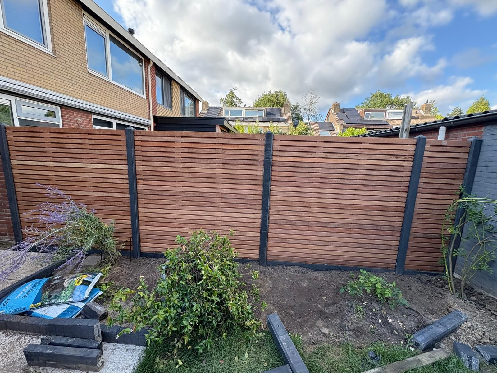

Ons werk
Projecten uit Dordrecht en omgeving
Een selectie van recent uitgevoerd werk — van onderhoud tot complete aanleg. Deze pagina wordt doorlopend aangevuld.
Deze projecten zijn een selectie van recent uitgevoerd werk. De pagina wordt doorlopend aangevuld met nieuwe projecten.
Heeft u een vergelijkbare tuin?
Laat ons uw tuin bekijken en ontdek wat mogelijk is — geheel vrijblijvend.